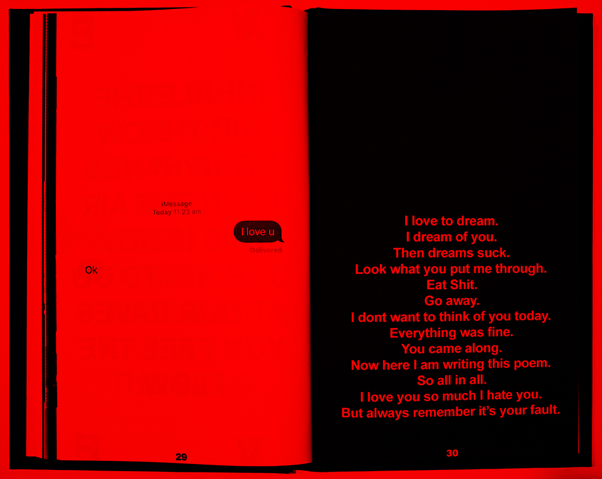
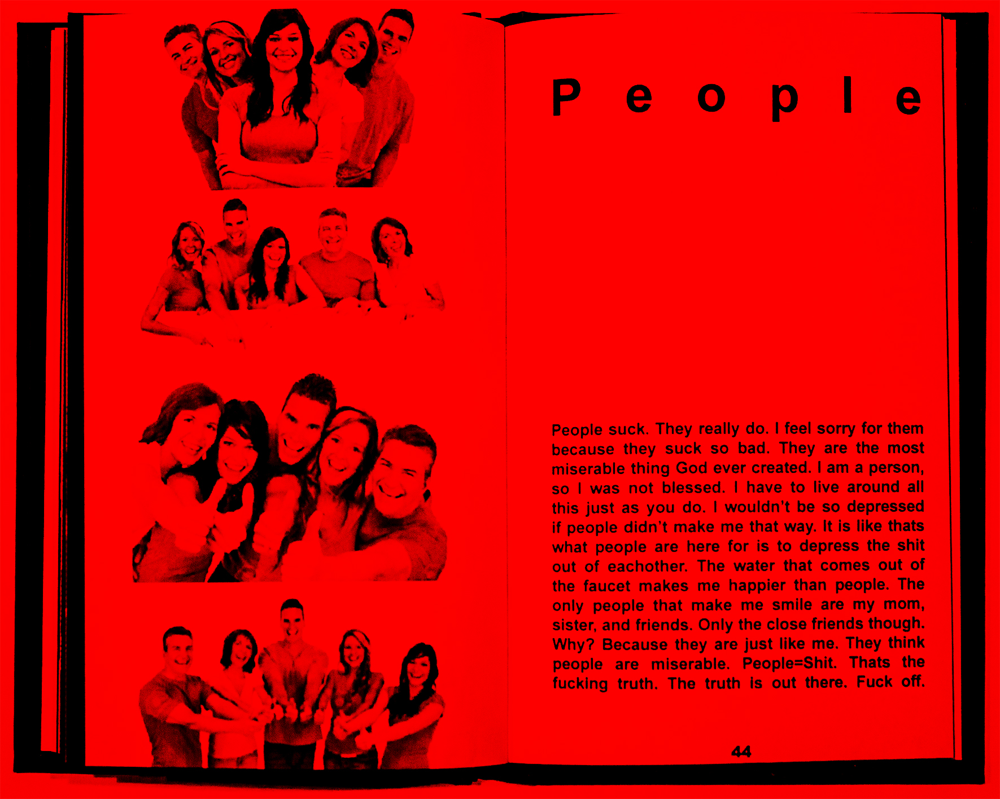

1. Editors Note
Hello and welcome to the first issue of Warning magazine. Inside this zine you will find the crazy mixed-up thoughts of a few very insane High School students with higher IQ's than most High School Teachers. This first issue is really an experiment of recording extremely useless thoughts that are recorded with the sole purpose of getting people like you into a very sub-concious mind. Consied this a Warning if you cant handle thinking alot then the best thing for you to do is close this window now or set this piece of paper down because this will be way to hard for you to handle. Sincerly, The Editor, HAPPY
2. HATE
I have seen what you have not. I have seen people starving. I have seen people dieing. I have seen people choking. I have seen smoke and fire. I have seen explosions. I have seen the good rot. I have seen the evil take over. I have seen what you dont want to see. I have seen good will turn bad. I have seen hell on Earth. I have seen the Omega. I have seen the future.If you dont all stop the hate and start to care this is what it is going to come to. The people of all colors will suffer together and you will then begin to care. That care wont matter anymore if you have waited to late. The world will end in disaster and there will be no starting over or repenting. War is in equality to hate. Murder is also in equality to hate. Don’t hate. Osama Bin Laden will get his for the people he killed God will make shure of it. Do not stoop to his level. Yes you all want revenge but revenge is not sweet. If you get revenge more innocent lives will be taken. You can’t kill a race just because of one person. Siners always get what they diserve in the end, but you to are being siners by trying to kill someone. Lives are taken for a reason. The people in New York had a reason to go. They where called, so let fate take it’s toll. God is in control.
3. VinylDJ
AD: www.vinyldj.com [VinylDJ]
4. Political Party
I want to start a political party! If anyone wants to help then just email me and we will see what we can do. I am serious about this so you should be serious too.
5. I made a Machine
I made a machine. I showed the machine to my grandpa. My grandpa asked what the hell a contraption was. My grandpa smacked me cause i shold not have cursed in his pressence. I got angry at first. I thought about it though. I'm not angry anymore. Who is Bill CLinton?
6. FREE AD SPACE
Email the Advertisment Dept.

7. My Glasses
My Glasses. I lost my glasses. I found my glasses. I better keep up with my glasses. I have not lost my glasses since then. I only lost them 8 hours ago. I couldn’t see. I could after I found them. I like poptarts.
8. Punk
So you wanna be a punk? Ok the one and only thing you need to know about how to be a punk is that you dont go around and tell people your a punk. This just makes you look like a poser and we don’t want that. Another thing dont wear clothes that say punk on them cause you look even worse then. If you have not already broke these rules then don’t and your on the right road.
9. Article Submission
To submit articles to Warning Zine. Email them to Happy_Hardcor3@punkmusic.com. We are looking for lots of submissions. We would also like you to let your friends know about Warning. If you would like to advertise send to the advertising address given. Thank You For Reading Warning!
10. Entrapment
I had a really sick realization about living in the capatilist country known only as the USA and some other names. The realization I had made me feel very uncomfortable about my well being in life or what small amount of life I am allowed to live.I realized that the goverment lies, they lie to all the people in the USA to please them and the people of this sick place swollow those lies and get ran over every day. I feel really bad for all these people and have thoughts wondering if any other people have trully realized the extent of the lies. For instance if a gov. official where to read this file I would probably be in a world of trouble because they have taken away the freedom of the press, especially if it makes them look bad and guess what. This makes them look really bad, but I don’t care. I decided after i made my realization I had to take some kind of a stand and well this is the stand I took. So if you don’t agree then F*!@ Off because I dont care.
11. I Have Met a Girl
I have met a girl. I have felt the flutter. I have a dream now. I have no regrets. I thought I would. I felt a little nervous. I know fate came. I want to be captivated.
12. A girl and her gun
OK. This girl brought a gun to school the other day. Her intent was to kill her ex-boyfriend and the girl he broke up with her for. We where all eating lunch and all the sudden she runs in the cafeteria with a 9mm pistol. She runs up to her ex and puts the gun against his skull. She informs him by saying, “You can either die or take me back.” The guy replies with, “Fuck You Bitch!” The girl speaks again saying, “Then your gonna die and then I am going to die too.” She pulled the trigger and it went click. The idiot forgot to load the gun. I bet she feels really stupid, being that she is sitting in a little cell now. She brought a gun into a no gun and drug area and forgot to load it. I hope the bitch rots in hell cause she scared the shit out of everyone. Dumb people are so profound sometimes.
13. Hardcore!
www.noahphex.com - Home of Noahphex.
14. Rave
Feel the beat move your feet watch the dj watch the light array eat the pills inhale the air throw your hands up in the air this is how our beats go at our raves you feel the flow.

15. I love to dream
I love to dream. I dream of you. Then dreams suck. Look what you put me through. Eat Shit. Go away. I dont want to think of you today. Everything was fine. You came along. Now here I am writing this poem. So all in all. I love you so much I hate you. But always remember it’s your fault.
16. Anti-Police
AD: The Anti-Police Campaign. Tell everyone the police fuckin suck!
17. Dropping A Bomb on Fast Food
Ok here’s what we are going to do. We are going to suprise one of our local fast food chains. Ok go to your local drive through fast food joint and order a large coke. When you get the coke go throw it back into the drive through window and shout something war related at them. You have just pulled an inconspicuous attack on a capitalist pig. Plus you uncaringly pissed someone off. Try this at all your local drive throughs more than once.
18. My Phone
My phone has some numbers on the bottom. This series of numbers is called a serial number. I will read the numbers to you. But first I want to describe my phone. My phone is green and kinda transparent. It has a grey attena. It is cordless. The numbers are 14018362. Do you like my phone? You better.

19. Email Me
THIS COULD BE YOUR AD JUST EMAIL ME! THE AD SPACE IS FREE TO THE FIRST PERSON TO REQUEST IT!
20. KKK
Ku Klux Klan. The home of a bunch of biggot bastards! Own them at all cost! www.kukluxklan.com
21. AD
Want money? Get a job.

22. People
People suck. They really do. I feel sorry for them because they suck so bad. They are the most miserable thing God ever created. I am a person, so I was not blessed. I have to live around all this just as you do. I wouldn’t be so depressed if people didn’t make me that way. It is like thats what people are here for is to depress the shit out of eachother. The water that comes out of the faucet makes me happier than people. The only people that make me smile are my mom, sister, and friends. Only the close friends though. Why? Because they are just like me. They think people are miserable. People=Shit. Thats the fucking truth. The truth is out there. Fuck off.
23. DJFirewire
www.mp3.com/djfirewire Electronic Music for your mind! Digitally Mastered by Rev. F1R3-W1R3!
24. Life Sucks
Life sucks. Life sucks. Life sucks. Life gets good for a little while. Life sucks. Life sucks. Life sucks. Life gets good for 3 days. Life sucks. Life sucks. Life sucks. Life just won’t go away.
25. Kiss My Ass
www.kissmyass.com (more than likely porno.)

26. WIN $1000
This is bullshit. Why do these dumb drink companys promise you shit like this. Well there are some cool people working for Coca-Cola. Today during my financial class the Coke guy was out by the Coke truck getting the Coke’s out to restock the machine with, and I asked him, “Hey can I have a Coke?” And he said, “Shure.” and got a 2 liter out of one of the racks and tossed it at me. I went into the class again and everyone started laughing at me cause I was the only person with the balls to ask him.
27. Last Year
So it’s my last year in the horrid prison of Detroit High. I am very proud I am leaving the go forsaken hell hole soon. I don’t think I could take anymore of all the bull shit. It’s very seriously like living in hell. I hate everyone in my class except for like 4 or 5 people. The largest amount of them are rednecks that ride tractors foir fun and fuck goes for entertainment. Gruesome hell bound little town. I am moving to Dallas to live amongst people. People with real lives. I am going to film school to be a producer so I can show my artistic interest visually. I am currently looking for someone to do some screenwriting. The best story wins, but it must be a voluntary script cause I’m a broke bastard.
28. Last year II By Happy_Hardcor3
I’m not longer going to film school my friends. Your friendly narrator is now going to major in Music and minor in Philosophy. Yes, Philosophy. The study of the human thought and reasoning processes. I am going to release an album and write a book. What the book will be about??? I don’t even know. I just know it is my manifest destiny. As I sit back and drink a Jack Daniels Hard Cola, I think of reasons why I made the sudden change. Main reason being the release of an album. I don’t know if you know or not, but your fine narrator has been working long hours writting songs for his album only so far to come up with 4 decent pieces. Maybe soon I will get another sprout of creativity and come up with something witty, but who knows?